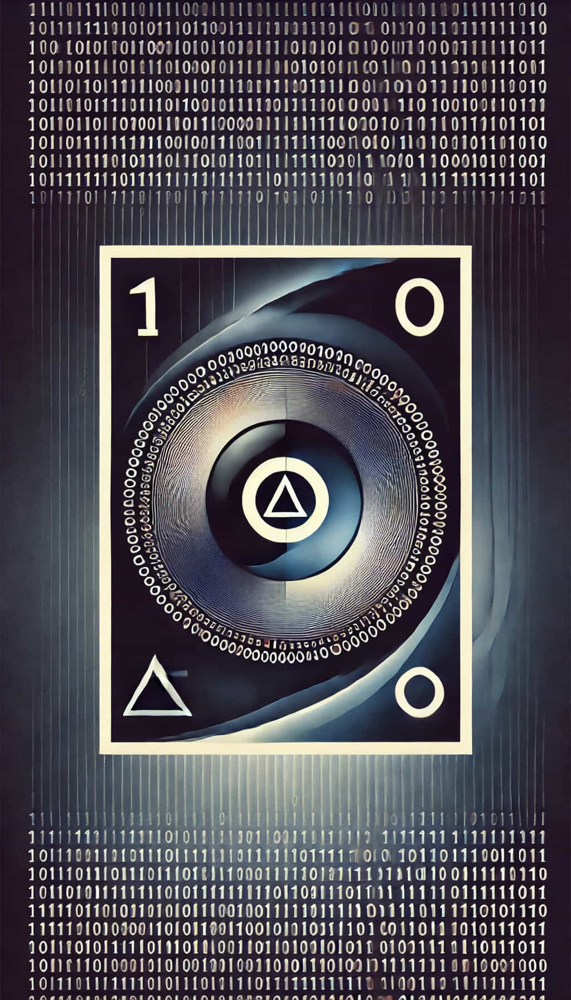

Revolutionizing Epistemology: Grounding Binary Information in Descartes' Cogito
Abstract
Descartes' Cogito ergo sum ("I think, therefore I am") draws one line that survives every doubt, and the line has two sides. Marking the certainty of the thinking self as '1' and everything still open to doubt as '0' gives a two-class bookkeeping of epistemic warrant, from which knowledge can be described in binary terms.
The convention is deliberately thin. It records two classes of warrant relative to the Cogito, and it is not by itself a physical bit, a thermodynamic record, an ontological partition of self from world, or the verification value a predictive protocol later assigns to a registered statement. Each of those readings needs its own map and its own justification, which is what makes the starting point safe to build on.
The Distinction in Plain Terms
Sorting a pile of mail into "definitely mine" and "everything else" is not a claim that the second pile is junk. It is a claim about what has been checked. The Cogito draws exactly that sort of line, and it draws it once, at the place where checking cannot fail.
Descartes tried to doubt everything and found one thing that would not go: the doubting. Any attempt to doubt that thinking is happening is itself thinking, so the attempt confirms what it tries to deny. That gives one item in the first pile. Everything else, the room, the body, yesterday, arithmetic under a sufficiently determined sceptic, goes in the second.
Writing the two piles as 1 and 0 is a bookkeeping choice, and it is worth being exact about what the choice does not mean. The 0 is not false. It marks a proposition that has not been secured with the same certainty. The mark also stops short of three further readings: a bit in a computer, a record with an energy cost, and a claim about where the self ends and the world begins. It is a note about warrant, and any further reading of it needs a separate argument.
What the line buys is a place to start. Once the two piles exist, the interesting question is how anything moves between them, and the answer is not more doubting. It is prediction: form an expectation about the second pile, meet the outcome, and record whether the expectation held.
1. Introduction
René Descartes (1596–1650) reworked philosophy around his method of systematic doubt, seeking an indubitable foundation for knowledge (Descartes 1996). Williams (1978) reads the project as an enquiry into what a thinker can establish from the inside, and Hintikka (1962) argued that the Cogito works performatively, since the certainty arrives in the act of the check. His seminal dictum, Cogito ergo sum ("I think, therefore I am"), encapsulates a truth arising directly from the act of thinking. What follows reads Descartes' insight as a two-class bookkeeping of warrant, in a vocabulary that information theory later made familiar. By conceptualizing the Cogito as a binary distinction - where '1' symbolizes the undeniable certainty of the thinking self and '0' represents varying degrees of uncertainty in the external world - this approach aims to establish a foundational basis for understanding knowledge through binary constructs.
Key to this framework is the precise definition of epistemic certainty and epistemic uncertainty. In this context, epistemic certainty refers to knowledge that is indubitable and self-evident, akin to Descartes' realization of the thinking self. Epistemic uncertainty encompasses all forms of knowledge that are subject to doubt, ranging from sensory perceptions to complex external phenomena. By mapping these epistemic states onto binary symbols, the framework aligns with the foundational principles of information theory and computational logic.
Universe 00110000
2. Descartes’ Method of Doubt and the Cogito
2.1. The Method of Systematic Doubt
Descartes employed his method of systematic doubt as a rigorous process to strip away all beliefs that could be subject to even the slightest doubt, with the ultimate goal of discovering a foundation upon which certain knowledge could be built. This entailed a radical skepticism, where he questioned the reliability of sensory perceptions, the existence of the physical world, and even the truths of mathematics, which could be doubted under the hypothetical existence of a deceptive demon. The method aimed at reaching indubitable truths by methodically eliminating uncertain beliefs, and perpetual skepticism was never the goal.
2.2. The Cogito as Foundational Certainty
Through his method of systematic doubt, Descartes ultimately arrived at the famous Cogito ergo sum - the realization that the very act of doubting one's existence serves as proof of the reality of one's own mind. This self-awareness becomes the foundational certainty upon which he builds his epistemology. The Cogito asserts that while all external realities can be doubted, the existence of the thinking self is indubitable because doubt itself is a form of thought.
3. Bridging Epistemology and Information Theory
3.1. Epistemology Meets Binary Information
Epistemology, the branch of philosophy concerned with the nature and scope of knowledge, deals with concepts such as belief, justification, and certainty. Information theory, initiated by Claude Shannon (1948), provides a mathematical framework for quantifying information, using binary digits ('bits') to represent data. The binary system, fundamental to digital computing, relies on two distinct states - '1' and '0' - to process and transmit information efficiently. Epistemic states can be modelled with the same two symbols, where 1 marks epistemic certainty and 0 marks epistemic uncertainty. The parallel is one of form. Shannon's bit is a physical or mathematical carrier with a probability attached, and the mark used here is a note about warrant, so the two coincide in notation and not in what they measure.
3.2. Binary Logic as an Epistemic Tool
Binary logic, a subset of Boolean algebra, is instrumental in the functioning of digital computers and logical reasoning systems. Associating 1 with epistemic certainty and 0 with epistemic uncertainty separates the indubitable Cogito from everything still open to doubt. The value '0' does not mean false or unreal. It marks a proposition as not yet secured by the foundational certainty of self-aware thought.
3.3. Connection to Shannon's Information Theory
In information theory, entropy quantifies the amount of uncertainty or randomness in a set of possible messages (Shannon, 1948). Higher entropy indicates greater uncertainty, whereas lower entropy corresponds to more predictability. Drawing an analogy between entropy and epistemic uncertainty makes knowledge acquisition a reduction of entropy. In this framework, transforming '0's (uncertain information) into '1's (certain knowledge) represents the cognitive effort to reduce uncertainty and increase understanding. This parallels the way information systems process and transmit data to minimize errors and enhance efficiency. The analogy aligns with Bayesian epistemology, which models belief updating as a probabilistic reduction of uncertainty (Jaynes 2003). Its limit is worth stating: erasing or resetting a physical record has an energy cost (Landauer 1961), and the mark used here carries no such cost, because it is a note about warrant rather than a physical record.

Universe 00110000
4. Establishing the Binary Informational Substrate
4.1. Justifying the Binary Abstraction
The binary abstraction emerges from Descartes' method of systematic doubt, which inherently categorizes beliefs into those that are certain and those that are uncertain. In this framework:
- '1' (Epistemic Certainty): Represents the indubitable existence of the thinking self - the foundational knowledge that survives radical skepticism.
- '0' (Epistemic Uncertainty): Encompasses all beliefs and information that can be doubted, including sensory perceptions, external objects, other minds, and abstract concepts.
This binary distinction simplifies the complex landscape of epistemic states into two primary categories, facilitating analysis using binary logic.
4.2. The Nature of '0' and Types of Uncertainty
The '0' in the binary framework encompasses various forms of uncertainty, each with distinct characteristics:
- Absence of Knowledge: Situations where information is lacking, leading to uncertainty due to ignorance.
- Error Risk: Information may later be found false. At the binary foundation it is classified as uncertain, and falsity is a separate verdict reached later.
- Conflicting Information: Contradictory data that creates ambiguity and requires resolution through critical analysis.
- Probabilistic Uncertainty: Situations where outcomes are not deterministic, reflecting degrees of likelihood and necessitating probabilistic reasoning.
- Contextual Uncertainty: Uncertainty arising from varying contexts or perspectives, highlighting the role of subjectivity in knowledge interpretation.
Recognizing these different types of uncertainty allows for a more nuanced understanding of the '0' state.
5. Conclusion
The binary epistemological framework rooted in Descartes' Cogito puts the distinction between epistemic certainty ('1') and uncertainty ('0') at the start of knowledge.
References
- Descartes, René. Meditations on First Philosophy. Translated by John Cottingham, revised ed., Cambridge University Press, 1996.
- Hintikka, Jaakko. "Cogito, Ergo Sum: Inference or Performance?" The Philosophical Review 71, no. 1, 1962, 3–32.
- Jaynes, E. T. Probability Theory: The Logic of Science. Cambridge University Press, 2003.
- Landauer, Rolf. "Irreversibility and Heat Generation in the Computing Process." IBM Journal of Research and Development 5, no. 3, 1961, 183–191.
- Shannon, C. E. "A Mathematical Theory of Communication." Bell System Technical Journal 27, 1948, 379–423 and 623–656.
- Williams, Bernard. Descartes: The Project of Pure Enquiry. Penguin, 1978.